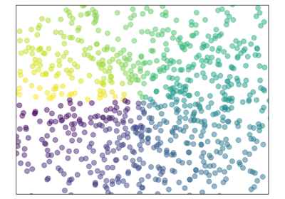
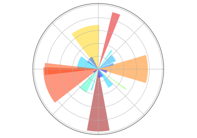
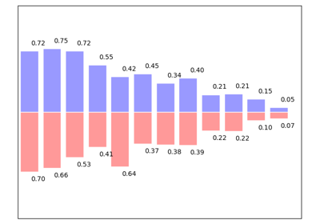
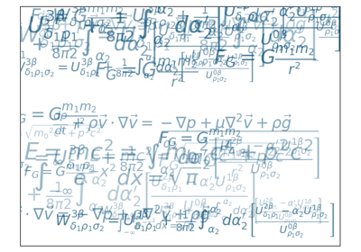
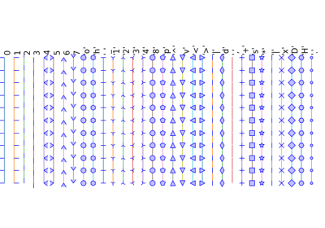
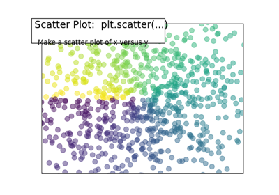
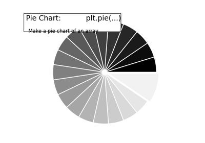
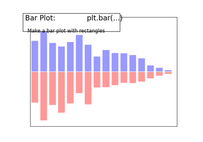
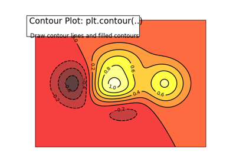
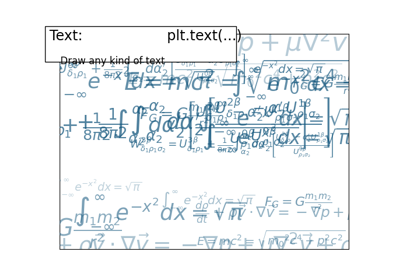

Code samples for Matplotlib¶
The examples here are only examples relevant to the points raised in this chapter. The matplotlib documentation comes with a much more exhaustive gallery.
Pie chart
A simple, good-looking plot

Plotting a scatter of points
Subplots
Horizontal arrangement of subplots
Horizontal arrangement of subplots

A simple plotting example

3D plotting
Imshow elaborate
Plotting a vector field: quiver
Plotting a vector field: quiver
A example of plotting not quite right
A example of plotting not quite right
Displaying the contours of a function
Displaying the contours of a function

Plotting in polar coordinates
Plot and filled plots

Bar plots
Subplot grid
Axes
Grid
3D plotting


Demo text printing
Code for the chapter’s exercises¶
Exercise 1

Exercise 3
Exercise 5


Exercise
Example demoing choices for an option¶

Linewidth
Alpha: transparency
Aliased versus anti-aliased


Colormaps
Solid joint style
Solid cap style


Dash join style

Markers
Linestyles

Code generating the summary figures with a title¶
3D plotting vignette

Plot example vignette
Multiple plots vignette


Plot scatter decorated

Pie chart vignette


Bar plot advanced


Display the contours of a function
Display the contours of a function


Text printing decorated